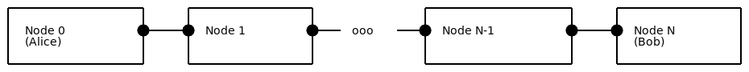
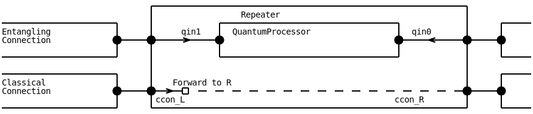
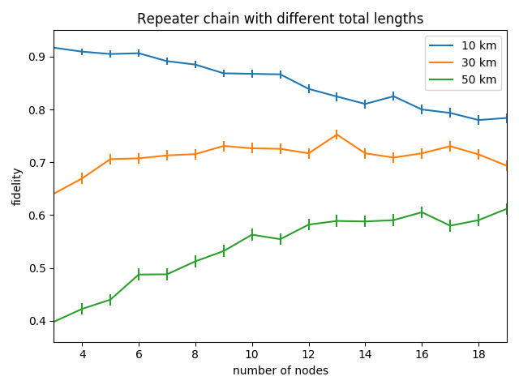
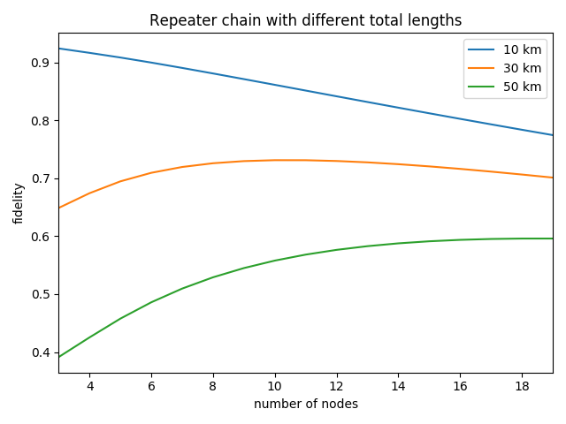

netsquid.examples.repeater_chain
In this example we show how a simple quantum repeater chain network can be setup and simulated in NetSquid. The module file used in this example can be located as follows:
>>> import netsquid as ns
>>> print("This example module is located at: {}".format(
... ns.examples.repeater_chain.__file__))
This example module is located at: .../netsquid/examples/repeater_chain.py
In the repeater example we simulated a single quantum repeater on a network topology consisting of two nodes connected via a single repeater node (see for instance [Briegel et al.] for more background). To simulate a repeater chain we will extend this network topology to be a line of N nodes as shown below:
{kind=link}
We will refer to the outer nodes as end nodes, and sometimes also as Alice and Bob for convenience, and the in between nodes as the repeater nodes. The lines between the nodes represent both an entangling connection and a classical connection, as introduced in the teleportation example. The repeaters will use a so-called entanglement swapping scheme to entangle the end nodes, which consists of the following steps:
generating entanglement with both of its neighbours,
measuring its two locally stored qubits in the Bell basis,
sending its own measurement outcomes to its right neighbour, and also forwarding on outcomes received from its left neighbour in this way.
Let us create the repeater chain network. We need to create the N nodes, each with a quantum processor, and every pair of nodes in the chain must be linked using an entangling connection and a classical connection. In each entangling connection an entangled qubit generating source is available. A schematic illustration of a repeater and its connections is shown below:
{kind=link}
We will re-use the Connection subclasses
EntanglingConnection and ClassicalConnection
created in the teleportation tutorial and
use the following function to create quantum processors for each node:
def create_qprocessor(name):
"""Factory to create a quantum processor for each node in the repeater chain network.
Has two memory positions and the physical instructions necessary for teleportation.
Parameters
----------
name : str
Name of the quantum processor.
Returns
-------
:class:`~netsquid.components.qprocessor.QuantumProcessor`
A quantum processor to specification.
"""
noise_rate = 200
gate_duration = 1
gate_noise_model = DephaseNoiseModel(noise_rate)
mem_noise_model = DepolarNoiseModel(noise_rate)
physical_instructions = [
PhysicalInstruction(INSTR_X, duration=gate_duration,
quantum_noise_model=gate_noise_model),
PhysicalInstruction(INSTR_Z, duration=gate_duration,
quantum_noise_model=gate_noise_model),
PhysicalInstruction(INSTR_MEASURE_BELL, duration=gate_duration),
]
qproc = QuantumProcessor(name, num_positions=2, fallback_to_nonphysical=False,
mem_noise_models=[mem_noise_model] * 2,
phys_instructions=physical_instructions)
return qproc
We create a network component and add the nodes and connections to it. This way we can easily keep track of all our components in the network, which will be useful when collecting data later.
def setup_network(num_nodes, node_distance, source_frequency):
"""Setup repeater chain network.
Parameters
----------
num_nodes : int
Number of nodes in the network, at least 3.
node_distance : float
Distance between nodes [km].
source_frequency : float
Frequency at which the sources create entangled qubits [Hz].
Returns
-------
:class:`~netsquid.nodes.network.Network`
Network component with all nodes and connections as subcomponents.
"""
if num_nodes < 3:
raise ValueError(f"Can't create repeater chain with {num_nodes} nodes.")
network = Network("Repeater_chain_network")
# Create nodes with quantum processors
nodes = []
for i in range(num_nodes):
# Prepend leading zeros to the number
num_zeros = int(np.log10(num_nodes)) + 1
nodes.append(Node(f"Node_{i:0{num_zeros}d}", qmemory=create_qprocessor(f"qproc_{i}")))
network.add_nodes(nodes)
# Create quantum and classical connections:
for i in range(num_nodes - 1):
node, node_right = nodes[i], nodes[i + 1]
# Create quantum connection
qconn = EntanglingConnection(name=f"qconn_{i}-{i+1}", length=node_distance,
source_frequency=source_frequency)
# Add a noise model which depolarizes the qubits exponentially
# depending on the connection length
for channel_name in ['qchannel_C2A', 'qchannel_C2B']:
qconn.subcomponents[channel_name].models['quantum_noise_model'] =\
FibreDepolarizeModel()
port_name, port_r_name = network.add_connection(
node, node_right, connection=qconn, label="quantum")
# Forward qconn directly to quantum memories for right and left inputs:
node.ports[port_name].forward_input(node.qmemory.ports["qin0"]) # R input
node_right.ports[port_r_name].forward_input(
node_right.qmemory.ports["qin1"]) # L input
# Create classical connection
cconn = ClassicalConnection(name=f"cconn_{i}-{i+1}", length=node_distance)
port_name, port_r_name = network.add_connection(
node, node_right, connection=cconn, label="classical",
port_name_node1="ccon_R", port_name_node2="ccon_L")
# Forward cconn to right most node
if "ccon_L" in node.ports:
node.ports["ccon_L"].bind_input_handler(
lambda message, _node=node: _node.ports["ccon_R"].tx_output(message))
return network
We have used a custom noise model in this example, which helps to exaggerate the effectiveness of the repeater chain.
class FibreDepolarizeModel(QuantumErrorModel):
"""Custom non-physical error model used to show the effectiveness
of repeater chains.
The default values are chosen to make a nice figure,
and don't represent any physical system.
Parameters
----------
p_depol_init : float, optional
Probability of depolarization on entering a fibre.
Must be between 0 and 1. Default 0.009
p_depol_length : float, optional
Probability of depolarization per km of fibre.
Must be between 0 and 1. Default 0.025
"""
def __init__(self, p_depol_init=0.009, p_depol_length=0.025):
super().__init__()
self.properties['p_depol_init'] = p_depol_init
self.properties['p_depol_length'] = p_depol_length
self.required_properties = ['length']
def error_operation(self, qubits, delta_time=0, **kwargs):
"""Uses the length property to calculate a depolarization probability,
and applies it to the qubits.
Parameters
----------
qubits : tuple of :obj:`~netsquid.qubits.qubit.Qubit`
Qubits to apply noise to.
delta_time : float, optional
Time qubits have spent on a component [ns]. Not used.
"""
for qubit in qubits:
prob = 1 - (1 - self.properties['p_depol_init']) * np.power(
10, - kwargs['length']**2 * self.properties['p_depol_length'] / 10)
ns.qubits.depolarize(qubit, prob=prob)
The next step is to setup the protocols. To easily manage all the protocols, we add them as subprotocols of one main protocol. In this way, we can start them at the same time, and the main protocol will stop when all subprotocols have finished.
def setup_repeater_protocol(network):
"""Setup repeater protocol on repeater chain network.
Parameters
----------
network : :class:`~netsquid.nodes.network.Network`
Repeater chain network to put protocols on.
Returns
-------
:class:`~netsquid.protocols.protocol.Protocol`
Protocol holding all subprotocols used in the network.
"""
protocol = LocalProtocol(nodes=network.nodes)
# Add SwapProtocol to all repeater nodes. Note: we use unique names,
# since the subprotocols would otherwise overwrite each other in the main protocol.
nodes = [network.nodes[name] for name in sorted(network.nodes.keys())]
for node in nodes[1:-1]:
subprotocol = SwapProtocol(node=node, name=f"Swap_{node.name}")
protocol.add_subprotocol(subprotocol)
# Add CorrectProtocol to Bob
subprotocol = CorrectProtocol(nodes[-1], len(nodes))
protocol.add_subprotocol(subprotocol)
return protocol
The definition of the swapping subprotocol that will run on each repeater node:
class SwapProtocol(NodeProtocol):
"""Perform Swap on a repeater node.
Parameters
----------
node : :class:`~netsquid.nodes.node.Node` or None, optional
Node this protocol runs on.
name : str
Name of this protocol.
"""
def __init__(self, node, name):
super().__init__(node, name)
self._qmem_input_port_l = self.node.qmemory.ports["qin1"]
self._qmem_input_port_r = self.node.qmemory.ports["qin0"]
self._program = QuantumProgram(num_qubits=2)
q1, q2 = self._program.get_qubit_indices(num_qubits=2)
self._program.apply(INSTR_MEASURE_BELL, [q1, q2], output_key="m", inplace=False)
def run(self):
while True:
yield (self.await_port_input(self._qmem_input_port_l) &
self.await_port_input(self._qmem_input_port_r))
# Perform Bell measurement
yield self.node.qmemory.execute_program(self._program, qubit_mapping=[1, 0])
m, = self._program.output["m"]
# Send result to right node on end
self.node.ports["ccon_R"].tx_output(Message(m))
The definition of the correction subprotocol responsible for applying the classical corrections at Bob:
class CorrectProtocol(NodeProtocol):
"""Perform corrections for a swap on an end-node.
Parameters
----------
node : :class:`~netsquid.nodes.node.Node` or None, optional
Node this protocol runs on.
num_nodes : int
Number of nodes in the repeater chain network.
"""
def __init__(self, node, num_nodes):
super().__init__(node, "CorrectProtocol")
self.num_nodes = num_nodes
self._x_corr = 0
self._z_corr = 0
self._program = SwapCorrectProgram()
self._counter = 0
def run(self):
while True:
yield self.await_port_input(self.node.ports["ccon_L"])
message = self.node.ports["ccon_L"].rx_input()
if message is None or len(message.items) != 1:
continue
m = message.items[0]
if m == ks.BellIndex.B01 or m == ks.BellIndex.B11:
self._x_corr += 1
if m == ks.BellIndex.B10 or m == ks.BellIndex.B11:
self._z_corr += 1
self._counter += 1
if self._counter == self.num_nodes - 2:
if self._x_corr or self._z_corr:
self._program.set_corrections(self._x_corr, self._z_corr)
yield self.node.qmemory.execute_program(self._program, qubit_mapping=[1])
self.send_signal(Signals.SUCCESS)
self._x_corr = 0
self._z_corr = 0
self._counter = 0
Note that for the corrections we only need to apply each of the \(X\) or \(Z\) operators maximally once. This is due to the anti-commutativity and self-inverse of these Pauli matrices, i.e. \(ZX = -XZ\) and \(XX=ZZ=I\), which allows us to cancel repeated occurrences up to a global phase (-1). The program that executes the correction on Bob’s quantum processor is:
class SwapCorrectProgram(QuantumProgram):
"""Quantum processor program that applies all swap corrections."""
default_num_qubits = 1
def set_corrections(self, x_corr, z_corr):
self.x_corr = x_corr % 2
self.z_corr = z_corr % 2
def program(self):
q1, = self.get_qubit_indices(1)
if self.x_corr == 1:
self.apply(INSTR_X, q1)
if self.z_corr == 1:
self.apply(INSTR_Z, q1)
yield self.run()
With our network and protocols ready, we can add a data collector to define when and which data we want to collect. We can wait for the signal sent by the CorrectProtocol when it finishes, and if it has, compute the fidelity of the qubits at Alice and Bob with respect to the expected Bell state. Using our network and main protocol we can easily find Alice and the CorrectionProtocol as subcomponents.
def setup_datacollector(network, protocol):
"""Setup the datacollector to calculate the fidelity
when the CorrectionProtocol has finished.
Parameters
----------
network : :class:`~netsquid.nodes.network.Network`
Repeater chain network to put protocols on.
protocol : :class:`~netsquid.protocols.protocol.Protocol`
Protocol holding all subprotocols used in the network.
Returns
-------
:class:`~netsquid.util.datacollector.DataCollector`
Datacollector recording fidelity data.
"""
# Ensure nodes are ordered in the chain:
nodes = [network.nodes[name] for name in sorted(network.nodes.keys())]
def calc_fidelity(evexpr):
qubit_a, = nodes[0].qmemory.peek([0])
qubit_b, = nodes[-1].qmemory.peek([1])
fidelity = ns.qubits.fidelity([qubit_a, qubit_b], ks.b00, squared=True)
return {"fidelity": fidelity}
dc = DataCollector(calc_fidelity, include_entity_name=False)
dc.collect_on(pydynaa.EventExpression(source=protocol.subprotocols['CorrectProtocol'],
event_type=Signals.SUCCESS.value))
return dc
We want to run the experiment for multiple numbers of nodes and distances. Let us first define a function to run a single simulation:
def run_simulation(num_nodes=4, node_distance=20, num_iters=100):
"""Run the simulation experiment and return the collected data.
Parameters
----------
num_nodes : int, optional
Number nodes in the repeater chain network. At least 3. Default 4.
node_distance : float, optional
Distance between nodes, larger than 0. Default 20 [km].
num_iters : int, optional
Number of simulation runs. Default 100.
Returns
-------
:class:`pandas.DataFrame`
Dataframe with recorded fidelity data.
"""
ns.sim_reset()
est_runtime = (0.5 + num_nodes - 1) * node_distance * 5e3
network = setup_network(num_nodes, node_distance=node_distance,
source_frequency=1e9 / est_runtime)
protocol = setup_repeater_protocol(network)
dc = setup_datacollector(network, protocol)
protocol.start()
ns.sim_run(est_runtime * num_iters)
return dc.dataframe
Finally we will run multiple simulations and plot them in a figure.
def create_plot(num_iters=2000):
"""Run the simulation for multiple nodes and distances and show them in a figure.
Parameters
----------
num_iters : int, optional
Number of iterations per simulation configuration.
At least 1. Default 2000.
"""
from matplotlib import pyplot as plt
fig, ax = plt.subplots()
for distance in [10, 30, 50]:
data = pandas.DataFrame()
for num_node in range(3, 20):
data[num_node] = run_simulation(num_nodes=num_node,
node_distance=distance / num_node,
num_iters=num_iters)['fidelity']
# For errorbars we use the standard error of the mean (sem)
data = data.agg(['mean', 'sem']).T.rename(columns={'mean': 'fidelity'})
data.plot(y='fidelity', yerr='sem', label=f"{distance} km", ax=ax)
plt.xlabel("number of nodes")
plt.ylabel("fidelity")
plt.title("Repeater chain with different total lengths")
plt.show()
Using the ket vector formalism produces the following figure:
{kind=link}
Because the quantum states don’t have an opportunity to grow very large in our simulation, it is also possible for this simple example to improve on our results using the density matrix formalism. Instead of running the simulation for 2000 iterations, it is now sufficient to run it for only a few. As we see in the figure below, the error-bars now become negligible:
{kind=link}
- class netsquid.examples.repeater_chain.SwapProtocol(node, name)
Bases:
NodeProtocolPerform Swap on a repeater node.
- Parameters:
node (
Nodeor None, optional) – Node this protocol runs on.name (str) – Name of this protocol.
- run(self)
Generator or function that runs the protocol.
Starting the protocol will execute this function. If a generator it will run it up to the first yield. All yields should return a
EventExpression, the generator will only continue when the expression has been triggered.If a function is returned, this protocol may still yield on the generator of its sub-protocols.
Sub-protocols are not started automatically when this method is overridden. Either start them manually in the overridden run() or call start_subprotocols() to start them all at once.
- Returns:
If this method returns a generator, then the final return of the generator will be set as the value of
FINISHED.- Return type:
Any
- add_signal(self, label, event_type=None)
Adds a signal type to the protocol that it can signal.
- Parameters:
- Returns:
The event type of the added signal type.
- Return type:
- add_subprotocol(self, subprotocol, name=None)
Add a sub-protocol to this protocol.
Neither protocol should be running and both protocols must be able to signal to each other (see
can_signal_to()).- Parameters:
subprotocol (
Protocol) – Protocol to add as a sub-protocol.name (str) – Reference name (key) to use for sub-protocol. If None, the name of the sub-protocol is used. If a sub-protocol using the same
namealready exists it is overridden.
- Raises:
ConstraintError – If either of the protocols is running, or if the protocols cannot signal to each other in both directions.
- await_mempos_busy_toggle(type cls, QuantumMemory qmemory, list positions)
Create an event expression that waits for one of the memory positions on a quantum memory to change the value of the busy state.
- Parameters:
qmemory (
QuantumMemory) – The quantum memory to wait for.positions (list of int) – The memory positions to wait for.
- Returns:
The event expression that will wait for one of the memory positions to toggle its busy flag.
- Return type:
- Raises:
TypeError – The
qmemoryparameter is not of typeQuantumMemory.IndexError – If the positions given don’t match a valid
MemoryPosition.
Notes
Memory positions can enable if they schedule events when the busy flag is toggled by setting
busy_event_enabled. Because by default busy_event_enabled is False, we enable it here. It is disabled whenreset()is called, otherwise it must be manually disabled.
- await_mempos_in_use_toggle(type cls, QuantumMemory qmemory, list positions)
Wait for when one of the positions of a quantum memory toggle their in_use flag.
- Parameters:
qmemory (
QuantumMemory) – The quantum memory to wait for.positions (list of int) – The positions to wait for.
- Returns:
The event expression that will wait for one of the memory positions to toggle its in_use flag.
- Return type:
- Raises:
TypeError – qmemory is not of type
QuantumMemory.IndexError – If the positions given don’t match a valid
MemoryPosition.
Notes
Memory positions can enable if they schedule events when the in_use flag is toggled by setting
in_use_event_enabled. Because by default in_use_event_enabled is False, we enable it here. It is disabled whenreset()is called, otherwise it must be manually disabled.
- await_port_input(type cls, port)
Create an event expression that waits until the specified port receives a message input.
The event expression will also trigger if the message is passed through the port. The expression must be yielded on to come into effect (see example below).
- Parameters:
port (
Port) – Port to listen to- Returns:
EventExpression that the protocol yields on. The message of the port can be fetched with
rx_input()- Return type:
Examples
>>> class MyProtocol(ns.protocols.Protocol): ... def __init__(self, port, msg_header): ... self.port = port ... self.msg_header = msg_header ... ... def run(self): ... yield self.await_port_input(self.port) ... message = self.port.rx_input(self.msg_header) ... if message is not None: ... print("A message was input via port {}: {}".format(self.port, message))
- await_port_output(type cls, port)
Create an event expression that waits until the specified port has a message output.
The event expression will also trigger if the message is passed through the port. The expression must be yielded on to come into effect (see example below).
- Parameters:
port (
Port) – Port to listen to- Returns:
Expression that the protocol yields on. The message of the port can be fetched with
rx_output()- Return type:
Examples
>>> class MyProtocol(ns.protocols.Protocol): ... def __init__(self, port, msg_header): ... self.port = port ... self.msg_header = msg_header ... ... def run(self): ... yield self.await_port_output(self.port) ... message = self.port.rx_output(self.msg_header) ... if message is not None: ... print("A message was output via port {}: {}".format(self.port, message))
- await_program(type cls, processor, await_done=True, await_fail=False)
Create an event expression that waits for a program on a quantum processor to stop running.
The expression must be yielded on to come into effect.
- Parameters:
processor (
QuantumProcessor) – The processor that runs the programawait_done (
bool, default True) – Whether to wait for the program to successfully finish.await_fail (
bool, default False) – Whether to wait for the program to fail.
- Returns:
The event expression that will wait for the quantum program to stop.
- Return type:
Notes
If both await_done and await_fail are set to True, it will wait until the program either finishes or fails.
- await_signal(self, Protocol sender, signal_label=Signals.FINISHED)
Create an event expression that waits until a sender has sent a specified signal.
The expression must be yielded on to come into effect (see example below).
- Parameters:
sender (
Protocol) – Protocol that will send the signal.signal_label (int or str or Enum, optional) – The signal label to wait for. Default is
FINISHED.
- Returns:
EventExpression that the protocol yields on. The signal result can be retrieved from the protocol with
get_signal_result()or withget_signal_by_event()- Return type:
- await_timer(self, double duration=0, double end_time=0)
Schedule an event to trigger at a specified time and create an event expression to wait for it.
The expression must be yielded on to come into effect.
- Parameters:
duration (
double, optional) – Amount of time (in Nanoseconds) the protocol should sleepend_time (
double, optional) – Ignored if duration bigger than 0, time instance at which the event triggers.
- Returns:
Expression that the protocol yields on
- Return type:
- can_signal_to(protocol)
Whether this protocol can send a signal to another protocol.
A local protocol can only signal to another local protocol if they have one or more nodes in common. A local protocol can always signal to a standard (non-local) protocol.
- Parameters:
protocol (
Protocol) – Protocol queried as to whether this protocol can send a signal to.- Returns:
Whether this protocol can signal to the other protocol.
- Return type:
bool
- static check_assigned(inputs, input_type=None)
Helper method to check if inputs properly assigned.
Checks that inputs are not None and that they have correct type.
- Parameters:
inputs (object or list of objects) – Inputs to check.
input_type (type or None, optional) – Type that inputs should be. If
None, type is not checked.
- Returns:
True if all
inputsspecified, otherwise False.- Return type:
bool
- get_signal_by_event(self, event, receiver=None)
Get the signal result based on the event that triggered it.
- Parameters:
event (
Event) – The event that triggered the signallingreceiver (
Protocolor None, optional) – The protocol wanting to receive the signal value. If not None, will check if signalling is possible usingcan_signal_to()
- Returns:
A named tuple with the label and result of the signal that was signalled with the given event. None if the event is no longer associated with a signal result.
- Return type:
SignalResultor None
Notes
To avoid storing all signal results and their events, only the most recent signal results are stored. This means if a signal is sent all previous signal results are deleted, and the previous events are no longer associated with a signal result. Signals in the same time instance can co-exist.
- get_signal_result(self, label, receiver=None)
Get the result of the last signal sent with this label.
- Parameters:
label (
strorintorSignals) – Label that the signal was broadcasted with.receiver (
Protocolor None, optional) – The protocol wanting to receive the signal value. If not None, will check if signalling is possible to this protocol usingcan_signal_to().
- Returns:
The value that was sent with the signal.
- Return type:
Any
- Raises:
RunTimeError – When attempting to get the result of a local signal from a nonlocal environment
TypeError – When attempting to get the result of something else than a protocol
KeyError – When the signal label is unknown i.e. hasn’t been added yet with
add_signal().
- property is_connected
Whether protocol has been properly configured and can be started.
Requires that all specified nodes have been set (are not None).
- Returns:
True if protocol is fully and correctly connected, otherwise False.
- Return type:
bool
- is_running
boolTrue if protocol is running, otherwise False.
- property max_nodes
maximum number of nodes this local protocol can run on.
- Type:
int
- name
Name of protocol for identification and display purposes.
- Type:
str
- property nodes
nodes local to this protocol.
- Type:
- remove(self)
Removes the entity from the simulation.
- reset(self)
Stops and starts the protocol leaving it in a clean state.
Will stop the protocol with the specified status, or Status.FAIL if not specified. Leaves the protocol in the Protocol.IDLE state.
- send_signal(self, signal_label, result=None)
Send a signal to other protocols to indicate a status change or announce a result.
- Parameters:
signal_label (
strorintorSignals) – Label, key or status that is broadcasted to the world. Other protocols can wait for this signal.result (Any or None, optional) – Result or intermediate results of the protocol that you want to broadcast with this signal
- Raises:
ValueError – If
signal_labeldoes not correspond to a signal of this protocol.
Notes
When a protocol is finished (i.e. its run() returns), the protocol sends a signal with label
FINISHED. The result is set to the return value.When a signal is sent with a label that was sent earlier, the result of the first signal is overwritten. Signal results sent in the same time instance can be individually retrieved using the triggering event.
- specify_node(name)
Specify a node required by this protocol.
The protocol cannot start until all specified nodes are set.
- Parameters:
name (str) – Key to index the node with.
- Raises:
RuntimeError – If specifying this node will exceed the maximum number of nodes
max_nodes.
- start(self)
Start the protocol.
Will register the protocol and run up to the first yield. Will not start any sub-protocols. Sub-protocols are started in the run(). When run() is not overridden it will start all sub-protocol in parallel automatically. If it is overridden the sub-protocols should be started manually in the method; this to give control on when sub-protocols should run in parallel or in sequence
- Returns:
This protocol is returned for convenience.
- Return type:
- Raises:
RuntimeError – If the protocol has not been properly connected.
- start_subprotocols(self)
Start all the sub-protocols in parallel.
- stop(self)
Stop the protocol as well as any running sub-protocols.
- subprotocols
sub-protocols of this protocol.
- Type:
- uid
returns a unique identifier for this entity in the simulation.
Each entity has a unique identifier in the simulation.
- Type:
int
- class netsquid.examples.repeater_chain.SwapCorrectProgram(num_qubits=None, parallel=True, qubit_mapping=None)
Bases:
QuantumProgramQuantum processor program that applies all swap corrections.
- default_num_qubits = 1
default number of qubits program requires. If -1 it can run on any number of qubits.
- Type:
int
- program()
Program to be executed.
Override this method to add additional control logic.
By default runs a single sequences of instructions that have been added using
apply().Notes
Returns a generator.
- apply(instruction, qubit_indices=None, output_key='last', physical=True, **parameters)
Prepare to apply an instruction.
Prepares a callback function that will be called when the instruction is executed by a quantum processor.
- Parameters:
instruction (
Instruction) – Next instruction to be called during program execution.qubit_indices (int or list of int or None, optional) – Program qubit indices to apply instruction to. If None or an empty list, then the instruction does not act on any qubit indices.
output_key (str, optional) – Dictionary key to store instruction output with. Default is to store all outputs using
last.physical (bool, optional) – Whether a quantum processor should interpret this instruction as being physical. If non-physical it should execute it instantly and and without noise.
**parameters – Additional keyword arguments to pass to the instruction.
- Returns:
str – Name of the instruction to be applied.
list of int – Program qubit indices instruction to be applied to.
function – Callback function that applies the instruction to a quantum processor.
Notes
The prepared callback also accepts
runtime_paramskeyword arguments that will override any matching keywords inparameters.
- get_qubit_indices(num_qubits=None)
Convenience method that returns the program’s qubit indices.
- Parameters:
num_qubits (int or None, optional) – Number of qubit indices to return. If
Nonewill try to return all indices corresponding toself.num_qubits, raising an exception if this is not bounded.- Returns:
Indices of program qubits.
- Return type:
list of int
- Raises:
ValueError – If too many indices are requested, or if all indices are requested and this number is not bounded.
- load(program)
Load in and run another quantum program within this program.
To be called within an overridden
program()method. Should be prepepended byyield from(see example below).The
outputdict is shared between both programs.- Parameters:
program (
QuantumProgram) – Another quantum program to load in and run. Can be an instance or a (sub)class ofQuantumProgram. If it is an instance, a copy is made.- Returns:
A generator for the loaded program.
- Return type:
generator
- Raises:
QuantumProgramError – If
programis invalid. This exception will be caught by a running program and cause it to fail.
Examples
It is possible to load a
QuantumPrograminstance or class.>>> def program(self): ... # ... ... yield from self.load(my_program_instance) ... yield from self.load(MyCustomProgram)
- property num_qubits
number of qubits program requires. If -1 can run on any number of qubits.
- Type:
int
- reset()
Reset state of program.
- run(parallel=True, lazy=False)
Carry out all applied instructions within the program to this point.
Called within an overridden
program()method. Should be prepepended byyield(see example below).- Parameters:
parallel (bool, optional) – Whether processor should attempt to run instructions in parallel (if physically supported). Default True.
lazy (bool, optional) – Whether to perform all instructions at once. Useful to keep qubit states small between combining and reducing. (Qubits in other processors that share the same qubit state do not get the chance to increase the state exponentially) All instructions will be executed at the current time instance without having to run the simulator. Noise will be applied accordingly for the duration of and between the instructions. However any other calls in an instruction to
sim_time()or scheduling events with schedule_now and schedule_after will be incorrect. Make absolutely sure that no such calls exists in the instructions. It will not be checked, so there is no guarantee that the simulation is correct otherwise. Default False.
- Returns:
tuple with the following entries:
- list of tuple(
ProgramInstruction) List of tuples specifying instruction name, program qubit indices, callback function.
- bool
Whether processor should attempt to run instructions in parallel (if physically supported).
- bool
Whether the processor should attempt to run instruction lazily (i.e. apply them all at once at the same event).
- list of tuple(
- Return type:
RunParameters
Examples
>>> def program(self): ... self.apply(INSTR_X, [0]) ... yield self.run(parallel=False)
- class netsquid.examples.repeater_chain.CorrectProtocol(node, num_nodes)
Bases:
NodeProtocolPerform corrections for a swap on an end-node.
- Parameters:
node (
Nodeor None, optional) – Node this protocol runs on.num_nodes (int) – Number of nodes in the repeater chain network.
- run(self)
Generator or function that runs the protocol.
Starting the protocol will execute this function. If a generator it will run it up to the first yield. All yields should return a
EventExpression, the generator will only continue when the expression has been triggered.If a function is returned, this protocol may still yield on the generator of its sub-protocols.
Sub-protocols are not started automatically when this method is overridden. Either start them manually in the overridden run() or call start_subprotocols() to start them all at once.
- Returns:
If this method returns a generator, then the final return of the generator will be set as the value of
FINISHED.- Return type:
Any
- add_signal(self, label, event_type=None)
Adds a signal type to the protocol that it can signal.
- Parameters:
- Returns:
The event type of the added signal type.
- Return type:
- add_subprotocol(self, subprotocol, name=None)
Add a sub-protocol to this protocol.
Neither protocol should be running and both protocols must be able to signal to each other (see
can_signal_to()).- Parameters:
subprotocol (
Protocol) – Protocol to add as a sub-protocol.name (str) – Reference name (key) to use for sub-protocol. If None, the name of the sub-protocol is used. If a sub-protocol using the same
namealready exists it is overridden.
- Raises:
ConstraintError – If either of the protocols is running, or if the protocols cannot signal to each other in both directions.
- await_mempos_busy_toggle(type cls, QuantumMemory qmemory, list positions)
Create an event expression that waits for one of the memory positions on a quantum memory to change the value of the busy state.
- Parameters:
qmemory (
QuantumMemory) – The quantum memory to wait for.positions (list of int) – The memory positions to wait for.
- Returns:
The event expression that will wait for one of the memory positions to toggle its busy flag.
- Return type:
- Raises:
TypeError – The
qmemoryparameter is not of typeQuantumMemory.IndexError – If the positions given don’t match a valid
MemoryPosition.
Notes
Memory positions can enable if they schedule events when the busy flag is toggled by setting
busy_event_enabled. Because by default busy_event_enabled is False, we enable it here. It is disabled whenreset()is called, otherwise it must be manually disabled.
- await_mempos_in_use_toggle(type cls, QuantumMemory qmemory, list positions)
Wait for when one of the positions of a quantum memory toggle their in_use flag.
- Parameters:
qmemory (
QuantumMemory) – The quantum memory to wait for.positions (list of int) – The positions to wait for.
- Returns:
The event expression that will wait for one of the memory positions to toggle its in_use flag.
- Return type:
- Raises:
TypeError – qmemory is not of type
QuantumMemory.IndexError – If the positions given don’t match a valid
MemoryPosition.
Notes
Memory positions can enable if they schedule events when the in_use flag is toggled by setting
in_use_event_enabled. Because by default in_use_event_enabled is False, we enable it here. It is disabled whenreset()is called, otherwise it must be manually disabled.
- await_port_input(type cls, port)
Create an event expression that waits until the specified port receives a message input.
The event expression will also trigger if the message is passed through the port. The expression must be yielded on to come into effect (see example below).
- Parameters:
port (
Port) – Port to listen to- Returns:
EventExpression that the protocol yields on. The message of the port can be fetched with
rx_input()- Return type:
Examples
>>> class MyProtocol(ns.protocols.Protocol): ... def __init__(self, port, msg_header): ... self.port = port ... self.msg_header = msg_header ... ... def run(self): ... yield self.await_port_input(self.port) ... message = self.port.rx_input(self.msg_header) ... if message is not None: ... print("A message was input via port {}: {}".format(self.port, message))
- await_port_output(type cls, port)
Create an event expression that waits until the specified port has a message output.
The event expression will also trigger if the message is passed through the port. The expression must be yielded on to come into effect (see example below).
- Parameters:
port (
Port) – Port to listen to- Returns:
Expression that the protocol yields on. The message of the port can be fetched with
rx_output()- Return type:
Examples
>>> class MyProtocol(ns.protocols.Protocol): ... def __init__(self, port, msg_header): ... self.port = port ... self.msg_header = msg_header ... ... def run(self): ... yield self.await_port_output(self.port) ... message = self.port.rx_output(self.msg_header) ... if message is not None: ... print("A message was output via port {}: {}".format(self.port, message))
- await_program(type cls, processor, await_done=True, await_fail=False)
Create an event expression that waits for a program on a quantum processor to stop running.
The expression must be yielded on to come into effect.
- Parameters:
processor (
QuantumProcessor) – The processor that runs the programawait_done (
bool, default True) – Whether to wait for the program to successfully finish.await_fail (
bool, default False) – Whether to wait for the program to fail.
- Returns:
The event expression that will wait for the quantum program to stop.
- Return type:
Notes
If both await_done and await_fail are set to True, it will wait until the program either finishes or fails.
- await_signal(self, Protocol sender, signal_label=Signals.FINISHED)
Create an event expression that waits until a sender has sent a specified signal.
The expression must be yielded on to come into effect (see example below).
- Parameters:
sender (
Protocol) – Protocol that will send the signal.signal_label (int or str or Enum, optional) – The signal label to wait for. Default is
FINISHED.
- Returns:
EventExpression that the protocol yields on. The signal result can be retrieved from the protocol with
get_signal_result()or withget_signal_by_event()- Return type:
- await_timer(self, double duration=0, double end_time=0)
Schedule an event to trigger at a specified time and create an event expression to wait for it.
The expression must be yielded on to come into effect.
- Parameters:
duration (
double, optional) – Amount of time (in Nanoseconds) the protocol should sleepend_time (
double, optional) – Ignored if duration bigger than 0, time instance at which the event triggers.
- Returns:
Expression that the protocol yields on
- Return type:
- can_signal_to(protocol)
Whether this protocol can send a signal to another protocol.
A local protocol can only signal to another local protocol if they have one or more nodes in common. A local protocol can always signal to a standard (non-local) protocol.
- Parameters:
protocol (
Protocol) – Protocol queried as to whether this protocol can send a signal to.- Returns:
Whether this protocol can signal to the other protocol.
- Return type:
bool
- static check_assigned(inputs, input_type=None)
Helper method to check if inputs properly assigned.
Checks that inputs are not None and that they have correct type.
- Parameters:
inputs (object or list of objects) – Inputs to check.
input_type (type or None, optional) – Type that inputs should be. If
None, type is not checked.
- Returns:
True if all
inputsspecified, otherwise False.- Return type:
bool
- get_signal_by_event(self, event, receiver=None)
Get the signal result based on the event that triggered it.
- Parameters:
event (
Event) – The event that triggered the signallingreceiver (
Protocolor None, optional) – The protocol wanting to receive the signal value. If not None, will check if signalling is possible usingcan_signal_to()
- Returns:
A named tuple with the label and result of the signal that was signalled with the given event. None if the event is no longer associated with a signal result.
- Return type:
SignalResultor None
Notes
To avoid storing all signal results and their events, only the most recent signal results are stored. This means if a signal is sent all previous signal results are deleted, and the previous events are no longer associated with a signal result. Signals in the same time instance can co-exist.
- get_signal_result(self, label, receiver=None)
Get the result of the last signal sent with this label.
- Parameters:
label (
strorintorSignals) – Label that the signal was broadcasted with.receiver (
Protocolor None, optional) – The protocol wanting to receive the signal value. If not None, will check if signalling is possible to this protocol usingcan_signal_to().
- Returns:
The value that was sent with the signal.
- Return type:
Any
- Raises:
RunTimeError – When attempting to get the result of a local signal from a nonlocal environment
TypeError – When attempting to get the result of something else than a protocol
KeyError – When the signal label is unknown i.e. hasn’t been added yet with
add_signal().
- property is_connected
Whether protocol has been properly configured and can be started.
Requires that all specified nodes have been set (are not None).
- Returns:
True if protocol is fully and correctly connected, otherwise False.
- Return type:
bool
- is_running
boolTrue if protocol is running, otherwise False.
- property max_nodes
maximum number of nodes this local protocol can run on.
- Type:
int
- name
Name of protocol for identification and display purposes.
- Type:
str
- property nodes
nodes local to this protocol.
- Type:
- remove(self)
Removes the entity from the simulation.
- reset(self)
Stops and starts the protocol leaving it in a clean state.
Will stop the protocol with the specified status, or Status.FAIL if not specified. Leaves the protocol in the Protocol.IDLE state.
- send_signal(self, signal_label, result=None)
Send a signal to other protocols to indicate a status change or announce a result.
- Parameters:
signal_label (
strorintorSignals) – Label, key or status that is broadcasted to the world. Other protocols can wait for this signal.result (Any or None, optional) – Result or intermediate results of the protocol that you want to broadcast with this signal
- Raises:
ValueError – If
signal_labeldoes not correspond to a signal of this protocol.
Notes
When a protocol is finished (i.e. its run() returns), the protocol sends a signal with label
FINISHED. The result is set to the return value.When a signal is sent with a label that was sent earlier, the result of the first signal is overwritten. Signal results sent in the same time instance can be individually retrieved using the triggering event.
- specify_node(name)
Specify a node required by this protocol.
The protocol cannot start until all specified nodes are set.
- Parameters:
name (str) – Key to index the node with.
- Raises:
RuntimeError – If specifying this node will exceed the maximum number of nodes
max_nodes.
- start(self)
Start the protocol.
Will register the protocol and run up to the first yield. Will not start any sub-protocols. Sub-protocols are started in the run(). When run() is not overridden it will start all sub-protocol in parallel automatically. If it is overridden the sub-protocols should be started manually in the method; this to give control on when sub-protocols should run in parallel or in sequence
- Returns:
This protocol is returned for convenience.
- Return type:
- Raises:
RuntimeError – If the protocol has not been properly connected.
- start_subprotocols(self)
Start all the sub-protocols in parallel.
- stop(self)
Stop the protocol as well as any running sub-protocols.
- subprotocols
sub-protocols of this protocol.
- Type:
- uid
returns a unique identifier for this entity in the simulation.
Each entity has a unique identifier in the simulation.
- Type:
int
- class netsquid.examples.repeater_chain.FibreDepolarizeModel(p_depol_init=0.009, p_depol_length=0.025)
Bases:
QuantumErrorModelCustom non-physical error model used to show the effectiveness of repeater chains.
The default values are chosen to make a nice figure, and don’t represent any physical system.
- Parameters:
p_depol_init (float, optional) – Probability of depolarization on entering a fibre. Must be between 0 and 1. Default 0.009
p_depol_length (float, optional) – Probability of depolarization per km of fibre. Must be between 0 and 1. Default 0.025
- property required_properties
Parameters that need to be passed to the model when the model is called.
- Type:
list
- error_operation(qubits, delta_time=0, **kwargs)
Uses the length property to calculate a depolarization probability, and applies it to the qubits.
- Parameters:
qubits (tuple of
Qubit) – Qubits to apply noise to.delta_time (float, optional) – Time qubits have spent on a component [ns]. Not used.
- add_property(name, value=None, mutable=True, value_type=None, value_constraints=None)
Add a property to this model.
Properties can be accessed and modified via the
propertiesattribute.If a property with this name already exists, an attempt will be made to set the new value.
- Parameters:
name (str) – Name of the property.
value (Any) – Value of the property.
mutable (bool, optional) – Whether the property is mutable. Default True.
value_type (type or tuple thereof, optional) – Allowed types of this property. Not constrained by default.
value_constraints (~netsquid.util.constrainedmap.ValueConstraint or list of ~netsquid.util.constrainedmap.ValueConstraint , optional) – Constraint checks to verify if value is a valid value. Not constrained by default.
- compute_model(qubits, delta_time=0, **kwargs)
Perform the action of the model.
This is the method called when the object is used as a callable function.
- Parameters:
qubits (list of
Qubitor None) – Qubits to apply error to.delta_time (float, optional) – Time qubits have spent on a component [ns].
- Raises:
TypeError – If the list items contains anything other than
QubitorNone.
Notes
For the model to work, the **kwargs need to include all the parameters listed in the attribute required properties of the model.
- classmethod concatenation_class()
Type of the object that is returned when concatenating this model
- Returns:
Concatenating two (subclasses of) QuantumErrorModel results in a QuantumErrorModel.
- Return type:
- property is_concatenated
If this model is concatenated by adding multiple models together
- Returns:
Whether this model consist of multiple models
- Return type:
bool
- static lose_qubit(qubits, qubit_index, prob_loss=1.0, rng=None)
Helper function to lose a qubit.
- Parameters:
qubits (list of
Qubit) – Qubits from which a qubit should be lost.qubit_index (int) – Index of the qubit that should be lost.
prob_loss (float, optional) – Probability with which the qubit is lost, used in case of number state.
rng (
numpy.random.RandomState, optional) – The random number generator to use. Default simtools.get_random_state().
Notes
In the case of a standard qubit item, it is discarded from its shared quantum state (if applicable).
If the qubit represents a number state (e.g. presence of a photon), the qubit is amplitude dampened according to the loss probability.
- property properties
Properties of the model. They are independent of the object that is calling/using the model.
- Type:
- validate(**properties)
Verifies that the given properties match the required properties.
The validate method is only called when a model is “attached” to a component. The model verifies that all the required properties have been defined as a part of the components properties.
- Parameters:
**properties – Input properties to be validated.
- Returns:
Returns True if all the required properties have been passed to the model. Otherwise returns False.
- Return type:
bool
- netsquid.examples.repeater_chain.create_qprocessor(name)
Factory to create a quantum processor for each node in the repeater chain network.
Has two memory positions and the physical instructions necessary for teleportation.
- Parameters:
name (str) – Name of the quantum processor.
- Returns:
A quantum processor to specification.
- Return type:
- netsquid.examples.repeater_chain.setup_network(num_nodes, node_distance, source_frequency)
Setup repeater chain network.
- Parameters:
num_nodes (int) – Number of nodes in the network, at least 3.
node_distance (float) – Distance between nodes [km].
source_frequency (float) – Frequency at which the sources create entangled qubits [Hz].
- Returns:
Network component with all nodes and connections as subcomponents.
- Return type:
- netsquid.examples.repeater_chain.setup_repeater_protocol(network)
Setup repeater protocol on repeater chain network.
- netsquid.examples.repeater_chain.setup_datacollector(network, protocol)
Setup the datacollector to calculate the fidelity when the CorrectionProtocol has finished.
- Parameters:
- Returns:
Datacollector recording fidelity data.
- Return type:
- netsquid.examples.repeater_chain.run_simulation(num_nodes=4, node_distance=20, num_iters=100)
Run the simulation experiment and return the collected data.
- Parameters:
num_nodes (int, optional) – Number nodes in the repeater chain network. At least 3. Default 4.
node_distance (float, optional) – Distance between nodes, larger than 0. Default 20 [km].
num_iters (int, optional) – Number of simulation runs. Default 100.
- Returns:
Dataframe with recorded fidelity data.
- Return type:
pandas.DataFrame
- netsquid.examples.repeater_chain.create_plot(num_iters=2000)
Run the simulation for multiple nodes and distances and show them in a figure.
- Parameters:
num_iters (int, optional) – Number of iterations per simulation configuration. At least 1. Default 2000.